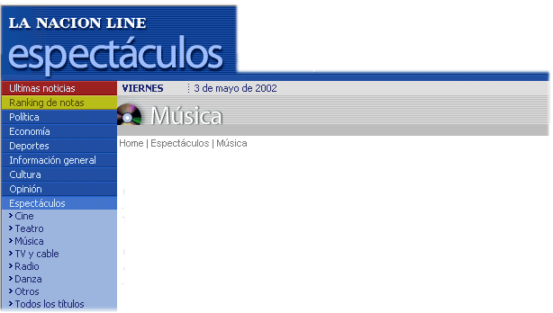
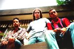

|
 |

 |
|
Los HIJOS DEL SOL en su mejor momento, en una plaza de Nueva York. |
NUEVA YORK.- En un pais en crisis, donde la Argentina aparece en todos los medios internacionales como el sinonimo del caos una luz de esperanza aparece para los Argentinos, la prueba de que siempre se puede, de que con perseverancia, talento y muchisimo esfuerzo se puede alcanzar el reconocimiento internacional.
Ver a HIJOS DEL SOL fuera del pais es increible, uno desde la Argentina no llega a ser conciente de la popularidad de la banda en EEUU, multitudes de fans esperando en los aeropuertos, en la puerta de los hoteles, con shows sold out en toda su gira por 23 estados.
¿Cual es el secreto del exito de la banda?, ¿Como es que logro conquistar un mercado en el que tantos han fracasado?. Le preguntamos esto y mucho mas en esta entrevista exclusiva para "Nación Espectaculos".
-¿Como llegaron a editar su disco en EEUU?
-Exequiel:
Todo
fue natural para nosotros, creo que estabamos destinados al exito.
-Rodrigo: Si, las cosas se nos dierón muy facil, tres companias
se peleaban por nuestro contrato.
-¿Como fue el proceso de grabación?
-Rodrigo:
Una
pavada, grabamos todo en tres horas y nos fuimos al hotel, en realidad para
no perder el tiempo lo grabamos en el hotel.
-Gonzalo: Si, la verdad de que a este disco no le pusimos muchas ganas...
estabamos medios aburridos ya de las giras y todo eso...
-Exequiel: Si, creo que se noto en todo el proceso el aburrimiento,
hasta en el titulo, creo que "Cansados del exito" fue demasiado
evidente.
-¿Como hacen para soportar una gira de tres años y medio?
-Rodrigo:
Es
agotador, lo reconozco, tocar todas las noches puede ser medio terrible, pero
la vida sana, cuidarse en las comidas y dormir 9, 10 horas por día
ayudan a llevarlo.
-Exequiel: Si, a veces se hace dificil, pero con una vida saludable
y responsable como la que llevamos lo podemos soportar.
-Gonzalo: Claro, totalmente, las drogas y las orgias todas las noches
hacen que no nos aburramos, aparte el playback nos viene salvando.
-En pocas palabras ¿a que se debe el secreto de su exito?
-Exequiel:
Esfuerzo,
perceberancia y credibilidad en el mensaje que le damos a la gente.
-Rodrigo: Totalmente, la gente nos ve a nosotros como uno mas, somos
creibles, no nos ve como estrellas inventadas por la maquina del marketing.
-Gonzalo: Exacto, tuvimos que transar con todas las companias, Ro se
acosto con el presidente de EMI y asi este puso la guita que había
que poner para que nos pasaran en los medios.
-Para finalizar ¿Que mensaje les darían a los Argentinos en este dificil momento?
-Exequiel:
No
nos tenemos que rendir hay que seguir adelante somos un pueblo fuerte y vamos
a saber salir de esta dificil situación.
-Rodrigo: Claro, tenemos que salir adelante, somos un pueblo grande
y estamos para cosas grandes.
-Gonzalo: Como dicen ellos, la Argentina es un pais berreta, de cuarta,
y por suerte ya no vivo mas ahí.